Recorrido del Caballo de Ajedrez

Materia: Programación 3
Integrantes:
Descripción
Dado un tablero de ajedrez de tamaño NN y una posición inicial para el caballo, el objetivo es encontrar un camino en el que el caballo visite cada casilla exactamente una vez. El caballo se mueve en forma de "L", es decir, dos casillas en una dirección (vertical u horizontal) y luego una casilla en una dirección perpendicular, o una casilla en una dirección y dos casillas en la perpendicular.
Total de 8 movimientos posibles a evaluar

Implementación
Backtracking
Pseudocódigo
Algoritmo Backtracking
def solveKT(n: int):
board = [[-1 for _ in range(n)] for _ in range(n)]
move_x = [2, 1, -1, -2, -2, -1, 1, 2]
move_y = [1, 2, 2, 1, -1, -2, -2, -1]
board[x_position][y_position] = 0
pos = 1
if not solveKTUtil(n, board , x_position, y_position, move_x , move_y , pos):
print("Solution does not exist")
else:
printSolution(n, board )
def solveKTUtil(n, board , curr_x: int, curr_y: int, move_x, move_y, pos):
if pos == n**2:
return True
for i in range(8):
new_x = curr_x + move_x[i]
new_y = curr_y + move_y[i]
if isSafe(new_x, new_y, board, n):
board[new_x][new_y] = pos
if solveKTUtil(n, board, new_x, new_y, move_x, move_y, pos + 1):
return True
board[new_x][new_y] = -1
return False
def isSafe(x, y, board, size):
return 0 <= x < size and 0 <= y < size and board[x][y] == -1
Costo
Exponencial
La complejidad temporal de este problema utilizando Backtracking normalmente
se analiza como (8^N^2), donde:
se analiza como (8^N^2), donde:
- N es el tamaño del tablero de ajedrez. Un tablero de ajedrez N x N tiene N^2 casillas.
- Movimientos máximos por casilla: en cada casilla, el caballero puede realizar como máximo 8 movimientos posibles.
Branch & Bound
 Para el problema propuesto, implementamos Branch and Bound con la heurística de Warnsdorff.
La cual prioriza la posición con menos movimientos hacia las casillas. Si una ruta falla, se utiliza Bactracking
para probar otras opciones hasta encontrar un recorrido completo o declarar que no existe solución.
Para el problema propuesto, implementamos Branch and Bound con la heurística de Warnsdorff.
La cual prioriza la posición con menos movimientos hacia las casillas. Si una ruta falla, se utiliza Bactracking
para probar otras opciones hasta encontrar un recorrido completo o declarar que no existe solución.
Otras Opciones
-
Poda por Distancia hacia el Centro del Tablero
Esta estrategia prioriza los movimientos hacia el centro del tablero. -
Poda por Casillas Visitadas Cercanas
Este criterio evita movimientos hacia casillas que se encuentran rodeadas de posiciones ya visitadas. -
Poda por Recursividad Controlada
Limitar la profundidad de la recursión en ciertos casos (tableros muy grandes). -
Poda de Movimiento Retornable
En esta estrategia, se busca que el caballo siempre pueda regresar a áreas más abiertas del tablero sin quedar encerrado. -
Poda basada en un rbol de Decisión Probabilístico
Para esto se utiliza un modelo probabilístico para determinar la "viabilidad" de cada movimiento.
B&B Pseudocódigo
Codigo B&B
def solveKT(n, pos_x, pos_y):
# Inicialización Matriz
board = [[-1 for i in range(n)] for j in range(n)]
# Movimientos posibles
move_x = [2, 1, -1, -2, -2, -1, 1, 2]
move_y = [1, 2, 2, 1, -1, -2, -2, -1]
board[pos_x][pos_y] = 0
pos = 1
if not solveKTUtil(n, board, pos_x, pos_y, move_x, move_y, pos):
print("Solution does not exist")
else:
printSolution(n, board)
def solveKTUtil(n, board, curr_x, curr_y, move_x, move_y, pos):
if pos == n**2:
return True
next_x, next_y = getNextMove(curr_x, curr_y, board, move_x, move_y)
if next_x != -1 and next_y != -1:
board[next_x][next_y] = pos
if solveKTUtil(n, board, next_x, next_y, move_x, move_y, pos + 1):
return True
# Backtracking
board[next_x][next_y] = -1
return False
def getNextMove(x, y, board, move_x, move_y):
min_degree = 8
next_move = (-1, -1)
for i in range(8):
new_x, new_y = x + move_x[i], y + move_y[i]
if isSafe(new_x, new_y, board):
degree = countNextMoves(new_x, new_y, board, move_x, move_y)
if degree < min_degree:
min_degree = degree
next_move = (new_x, new_y)
return next_move
def countNextMoves(x, y, board, move_x, move_y):
count = 0
for i in range(8):
new_x, new_y = x + move_x[i], y + move_y[i]
if isSafe(new_x, new_y, board):
count += 1
return count
def isSafe(x, y, board):
if 0 <= x < len(board) and 0 <= y < len(board) and board[x][y] == -1:
return True
return False
def printSolution(n, board):
for i in range(n):
for j in range(n):
print(board[i][j], end=' ')
print()
Costo B&B
-
En el peor caso, la complejidad temporal de la regla de Warnsdorff es (^2x8), donde ^2 es el n煤mero de casillas del tablero y 8 es el máximo n煤mero de movimientos posibles del caballo.
Comparaciones&B
Cantidad de pasos
Distintos tamaños de tablero
B&B vs Backtracking
Preguntas
Apples
$1
7
Oranges
$2
18